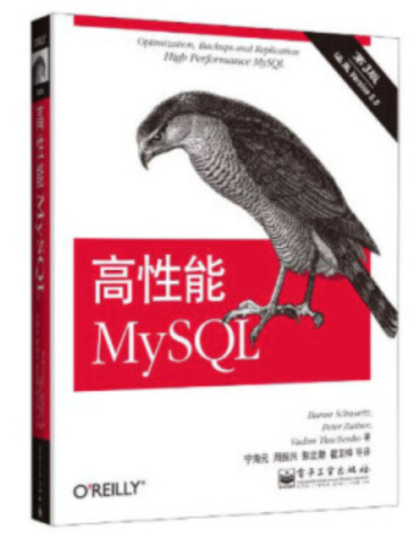
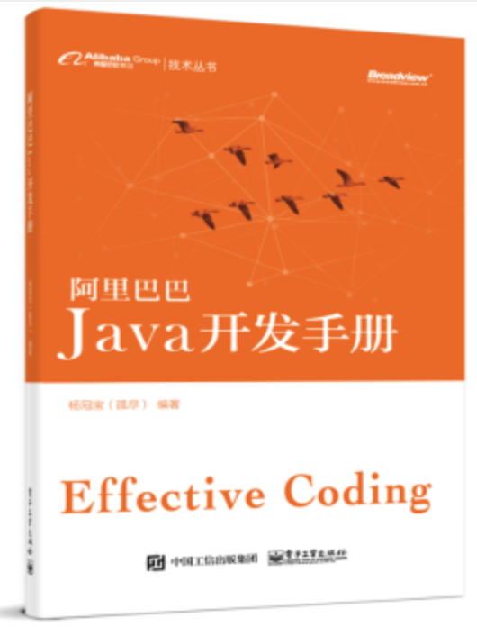
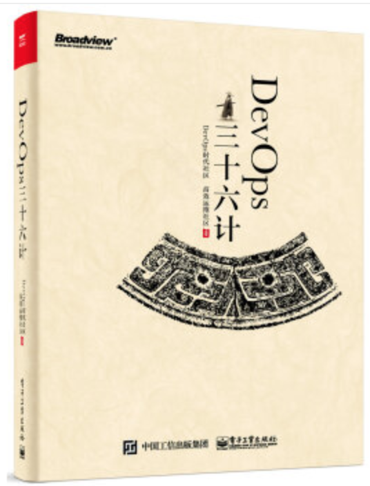

上半年看了一些书，简单总结一下
坚持阅读
古人云：“活到老，学到老。” IT技术发展太快，行业日新月异，作为最苦逼职业之一，软件工程师，只能不停的学习、深造、提升。总之，学不可以已，所以，保持良好的心态，持之以恒，这个很重要。
以下是今年上半年阅读的相关书籍，这里分享七本：
1.《亿级流量-高并发高可用架构实战》张开涛
江湖人称”涛哥”，京东大牛，一次偶然的机会，通过中生代技术了解到了这本书，一些大牛的公众号也有推荐过此书，真正的干货实战书。
去年下半年购买入手，读过了一次。当时正在紧急开发一个互联网项目，用户体量和访问流量预估还不低，虽然有过类似项目的架构设计和开发经验，但当时内心还是有一些忐忑，毕竟没有做过真正的大日活互联网的产品项目，目前月活千万左右，当时整个业务复杂程度也不低，顶着开发时间压力和上线压力，推进项目往前走，而负责整个后台技术架构，我急需系统化地补充和丰富加强这方面的知识，正当焦虑不已、烦恼失眠的时候拥有了此书，仿佛得到了神助攻，系统化地学到了一线互联网公司常见的技术实战经验，和能直接实施落地的解决方案，完整且系统地介绍了”高并发””高可用”这六个字涵盖了几乎所有的方方面面，帮到了我很多很多。今年年初又读了一遍，同时把它也作为了自己的一本常用字典书，温故而知新。
如果你也有和我同样遇到了这方面的需要，此书你一定不能错过，任何一位架构师或者立志成为架构师的你，真的应该读一读此书。
2.《高性能Mysql》第三版

这本书常年进入到技术类的畅销榜单，应用Mysql的必备工具书之一，很多人都推荐过。像我们目前作为一个月活千万的产品，日数据量增速也不低，一个良好且稳定的数据库设计非常重要。
当时产品项目上线后，由于前期的数据库表设计不当，导致扩展性低，索引问题、Sql问题等引发了好几次线上故障，DB的CPU/读写IO分别接连遭遇爆表，修复BUG折腾到几乎怀疑人生。由于使用了阿里云的RDS，硬件基础设施优化倒不用怎么考虑，更多地是在上层优化，学习和实践。
比如不同存储引擎的区别是什么？索引原理是什么？索引到底应该怎么建、选择哪种类型、哪种算法？各自实际场景该如何选择？分库分表、读写分离如何实施？分表算法使用哪种高效、稳定性和扩展性高？主从延迟大怎么办？在线数据迁移如何最大化减轻对线上的影响？分布式下主键值怎么生成、空间占用最小、检索性能最好？Sql怎么编写性能高、效率高？如何避免sql中的索引失效？查询慢具体原因是什么？执行计划各个指标如何查看评估和分析？等等一系列的问题，这本书中的一些章节内容帮到了我很多，同时美团技术团队分享出来的这方面文章，我csdn博客中有转载此类文章，也学到了很多一线的实战内容。
3.《阿里巴巴JAVA开发手册》，阿里巴巴

去年11月云溪大会时，阿里推出了一系列技术群书，此书是其中一本，于年初入手了。阿里，作为国内JAVA重度使用者之一，首次披露内部的开发标准和规范，目的是：码出高效，码出质量。
从严格意义上讲，本书超越了Java语言本身，明确作为一名合格开发者应该具备的基本素质，本书以开发者为中心视角，划分为编程规约、异常日志、单元测试、安全规约、MySQL数据库、工程结构、设计规约七个维度，每个条目下有相应的扩展解释和说明，正例和反例，全面、立体、形象地帮助到开发者的成长和团队代码规约文化的形成。
我一直觉得：一个优秀的工程师和一个普通工程师的区别，不是满天飞的架构图，他的功底体现在所写的每一行代码上，”talk is cheap, show me the code”，也一直都是我的IT编程座右铭之一。
以阿里的技术底蕴为基础打造的此书，一定不会让你失望的。技术没有终点站，只有不断打磨技术，去成为更好的自己，我们共勉。
4.《口渴之前先挖井》哈维·麦凯
一次偶然机会入手了此书，在一个技术牛人公众号中看到推荐了此书，单看书名就有点意思想买了。如果你认为是鸡汤书，那你就大错特错了。
如今社会，各行各业，无论你多聪明，无论你多有天赋，你都不可能只依靠一己之力。成功人士所共有的一个特点，那就是：他们都有很强的创建并维护一个人际网的能力，拥有高质量、靠谱稳定的朋友圈。人际网的建设，其实是最应该学会的处世本领，无论多年轻都可以，学得越早、受益越多。
书中有很多案讲解，比如如何建立并扩大自己的人际网？有哪些套路？比如，不要在一场聚会上获取25张业务名片，泛泛之交是没有用的。最佳的方法是，在参加一个聚会或商业会议时，一次只认识2到3个人，然后对他们作深入的了解。再比如，如何与久未联系的同事或朋友保持亲密的关系？首先要做的，是去朋友那里，看有什么可以帮助的。记住最好的方法就是，不要求别人为你做什么，只要想能为别人做什么，这才是建立人际网的真正艺术。
滴水之恩，要涌泉相报，人对我好，我十倍还之，反之，则道不同不相为谋，避而远之即可。如果你想知道关于更多的关系人际关系建设内容，可以读一读此书。
5.《智能时代》，吴军
一直对吴军的书很中意，像《浪潮之巅》《数学之美》等，此书也是逻辑思维推荐的畅销书之一。
此书的内容，从数据对人类的作用，数据如何从量变到质变，数据如何推动思维革命，数据在商业上起到的作用，数据如何收集和确保安全，数据和人类隐私的关系，再到数据带来的智能革命对于社会所产生的影响。所有的思维、思考，描述得行云流水，阐释得十分简练清晰，一气呵成读完，十分酣畅淋漓的感觉，有人称他是”中国版的普罗米修斯”。
吴军认为，在智能时代，只有2%的人能够脱颖而出，其余98%的人将成为鱼腩。那时，大量的工作岗位消失，大量的人被迫离开熟悉的环境和生活，费解于社会的巨变，陷入命运的颠簸。在智能革命到来之际，我们要么加入到这次浪潮中，要么观望徘徊，最后被淘汰。但也只有2%的喜欢吃螃蟹的人愿意加入到机器智能的队伍中来。任何一次技术革命，最初受益的都是发展它、使用它的一代，而远离他、拒绝接受他的人，在很长时间里都将是迷茫的一代。简言之，面对人工智能，要么拥抱，要么死去。因为，这既是一个让人振奋不已的时代，也是一个充满空前挑战的时代，而我，就是一个特别喜欢做挑战的事的人。
好吧(∩_∩)，我知道你也许读到这里焦虑迷茫了，不用着急，读一读此书，你也许就轻松开朗了。
6.《人工智能》，李开复
加上《未来简史》《智能时代》，这是我读的第三本关于AI，人工智能，关于未来的书了。
这本书，主题上讨论了个人应该做些什么，才能避免被AI取代？企业应该如何升级，才能在新的商业变局到来前抓住先机？有关于思考未来商业产品应用，也讲了个人在人工智能时代该如何学习，比较有价值。
三本书，体会着三个不同人思考的方式和观察角度。总体上感觉李的书，故事性更强一些，可以作为初级的人工智能科普书。
的确，刚开始看完了是有些焦虑，但我也不担忧和惧怕人工智能时代的到来，还是觉得当下要做的，应当是尽早认清AI是什么，了解其规律，思考商业产品应用，与自身个人实际情况相结合，去拥抱新时代的到来，投入其中。
7.《DevOps实战三十六计》，高效运维社区

我算是第一批加入高效运维社区群的人之一，很早就关注到了DevOps，期待本书很久了。它是Development（开发）和Operation（运维）两个单词的缩写，它以自动化为基本，以配合协作为黏合剂，以服务业务为己任，从调研、需求、设计到开发、测试，安装、运维及运营，贯串于软件的全部生命周期。
DevOps是目前加快从需求到应用上线的上好途径，涵盖了产品设计、敏捷开发、微服务设计、持续集成和部署、自动化运维等各个关键环节。DevOps源于技术，但又超越技术。
此书，从精益、敏捷、开发、测试、运维、架构、安全等各个方面分享他们在顶级互联网公司及领先的传统企业的多年智慧和经验总结，分享了很多踩过的坑，以及经历的血的教训，常备的实用工具书之一。
总结
我一直都觉得，阅读是一件值得培养和养成习惯的事情，希望自己能一直坚持下去，保持这个良好的习惯。不太喜欢电子书，还是更多地喜欢纸质的阅读感受。
下半年了，给自己制定了新的学习计划、阅读计划，希望能学到更多的东西，以及实践经验，能走得更远、更稳、更好。
共勉，(๑•̀ㅂ•́)و✧加油，Minbo
其他推荐
技术类书
- 重构-改善既有代码的设计
- Clean Code 代码整洁之道
- 设计模式
非技术类书
- 番茄时间管理法
- 高效能人士的七个习惯
- 拖延心理学